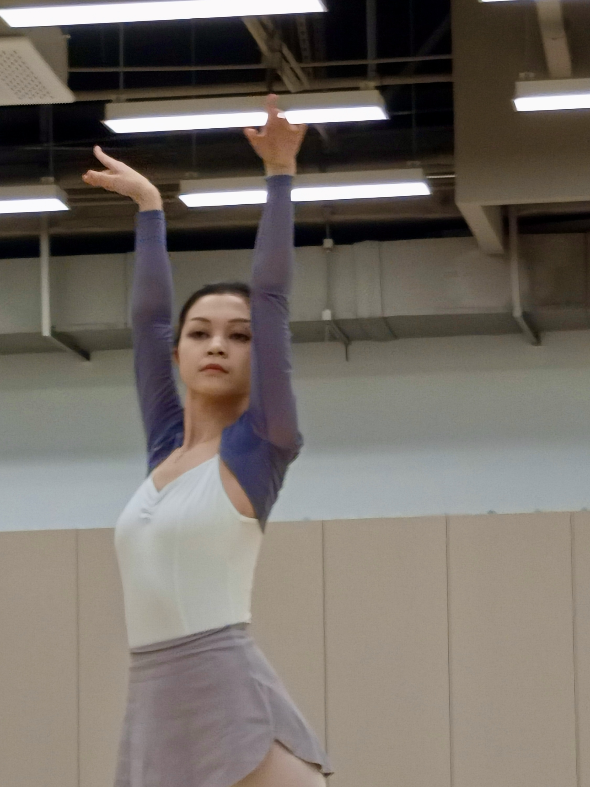
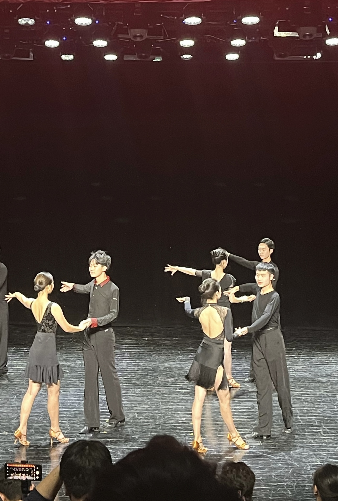
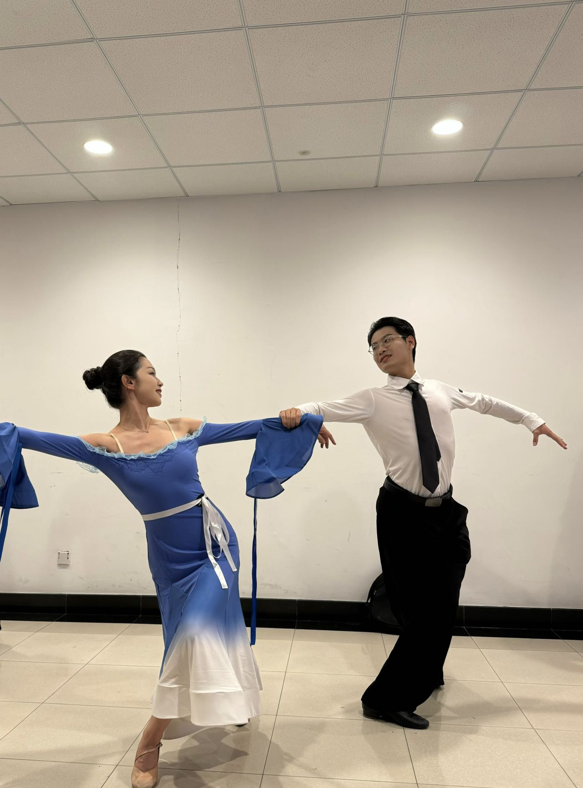
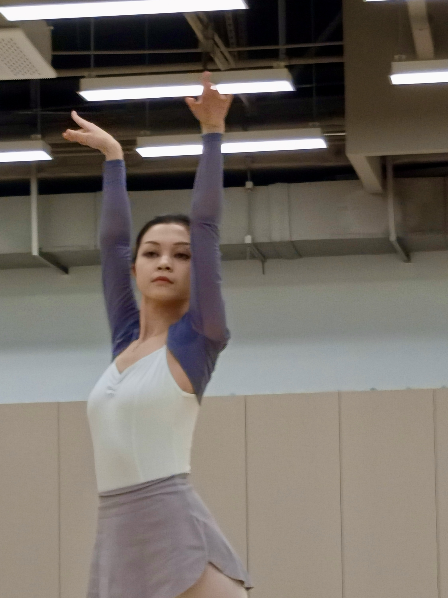
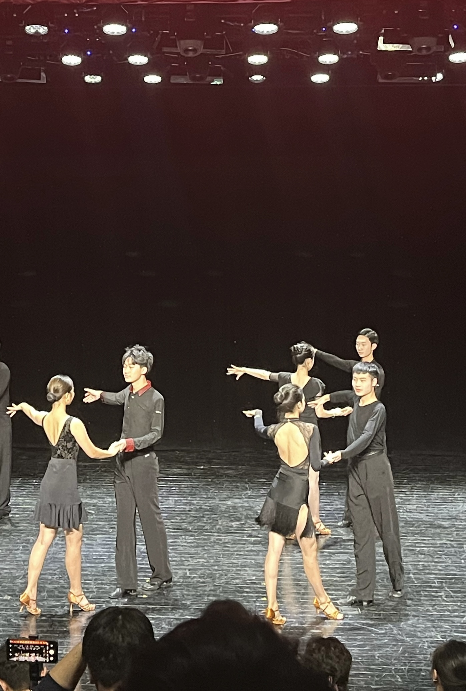
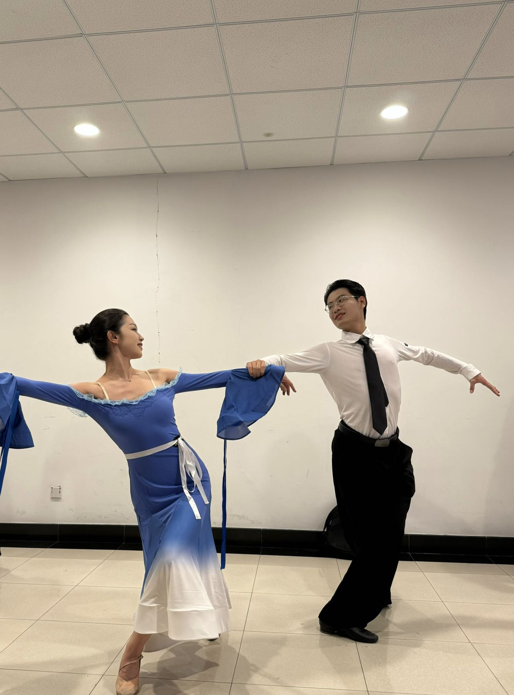

My Life
I love Italian food and French cuisine, exploring new cities, and capturing moments with photography. Outside of data, you’ll often find me reading or hunting down great coffee.


 




